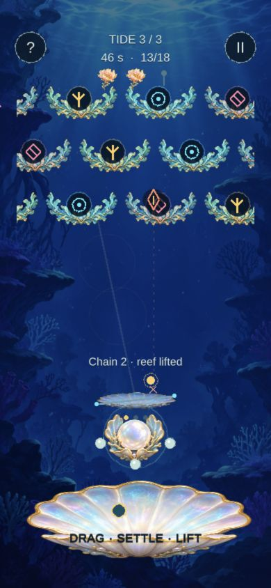

REFLECTOR
ABA Games / Kenta Cho
Borrowed
Holding strengthens a reflection while shrinking the interception span.
A narrower shield. A brighter return.
Aim a shell mirror to catch falling sparks. Charging narrows your defense but lets the return chain through matching coral—and heal the lantern.

Two specific mechanisms, combined into one player decision.
ABA Games / Kenta Cho
Holding strengthens a reflection while shrinking the interception span.
ABA Games / Kenta Cho
The first struck color keys a beam; matching rows chain, mismatches stop it.
Reference research captures · framed for clarity; click for full images. Source claims, credits & provenance ↗
The mutation changes what you must weigh up on each move.
Aim, catch width, and same-key alignment belong to one reflection. A mismatch still stops a fully charged ray.
Illustrative rule diagram · selectable comparison, not a game simulation.
A relaxed mirror spans 112 pixels and clears one row. Good for an off-center spark.
At full charge the span is 44 pixels. Align matching keys to clear up to three rows; 2+ heals one pearl.
One portrait field. One short offline round. Immediate retry.
Incoming spark + coral keys
Angle the shell from below
Trade catch width for capacity
Clear, heal, and bloom onward
Design hypotheses to test with you; automated completion does not establish enjoyment.
A good intercept also solves the coral alignment.
A risky chain can repair earlier damage in the same move.
Watch the forecast, time the charge, then see the ray follow it.
Does charging feel risky for a reason you can see?